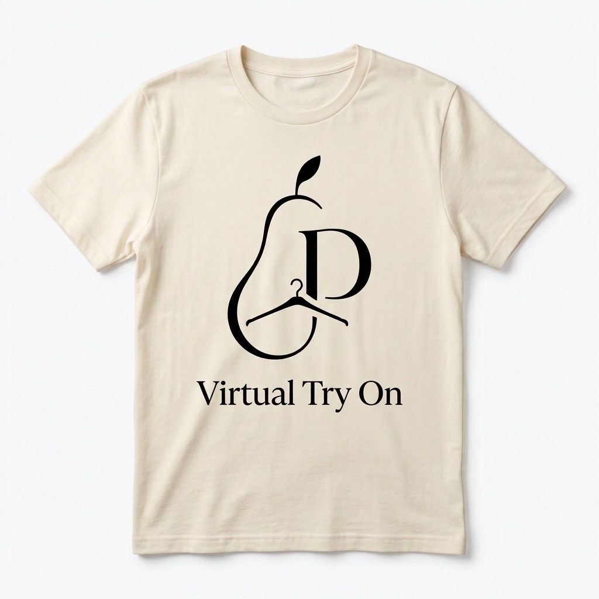
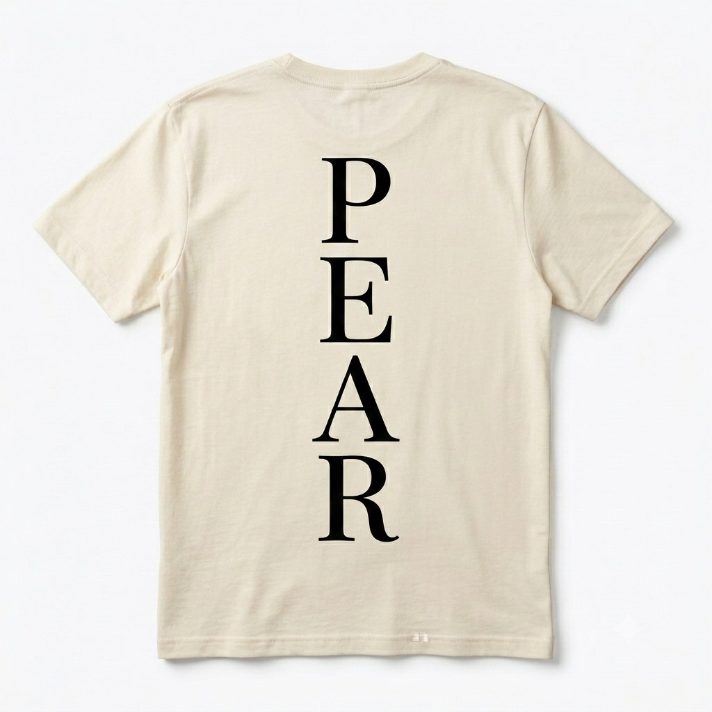
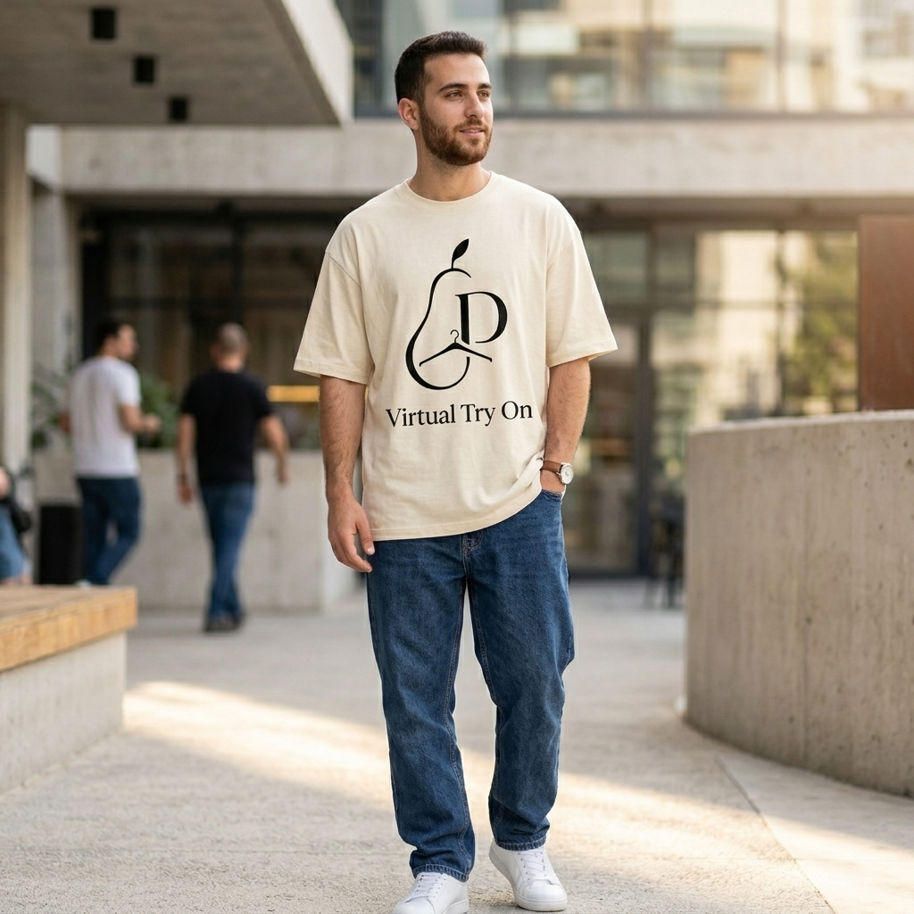

המרה
100%
ביטחון בהתאמה
הגדלת המרות
ביטחון מלא בהתאמה עוד לפני התשלום.
- פחות עגלות נטושות
- בלי ניחושים בטבלת מידות
הלקוח רואה את הבגד על עצמו ומקבל מידה מדויקת, בזמן אמת. אתם מקבלים יותר המרות ופחות החזרות.



סילואט אוברסייז: רדו מידה אחת להתאמה סטנדרטית, או בחרו את המידה הרגילה למראה בוקסי מכוון.
בלי הרשמה. שימוש אחד בכל ביקור.
Live Widget · בלי הרשמה
בדיוק מה שהלקוח רואה בדף מוצר.
ארבע תוכניות, כולן ניתנות לעריכה: אתם קובעים כמה מדידות מקבל כל משתמש.
השפעה עסקית
המרה, מלאי ותפעול — מה משתנה בכל אחד מהם.
המרה
100%
ביטחון בהתאמה
ביטחון מלא בהתאמה עוד לפני התשלום.
מלאי
0
מידות מיותרות בעגלה
סוף להזמנת שלוש מידות של אותו פריט למדידה בבית.
תפעול
~25%
פחות החזרות
צמצום שיעור ההחזרות בעד כ-25%.
Developer Docs
הטמעה של פחות מ-5 דקות, בשלושה שלבים, בלי שינוי בארכיטקטורת האתר.
גישה למדריך ההטמעה הטכני ניתנת באישור ידני של צוות הפיתוח.
אין לכם קוד גישה? מלאו את הטופס למטה ונשלח לכם מיידית ←Get In Touch
שאלה על הטמעה או דמו למותג שלכם — מלאו את הטופס או פנו אלינו ישירות.
צוות PEAR זמין לשאלות טכניות, הדגמות למותגים ותמיכה בהטמעה.